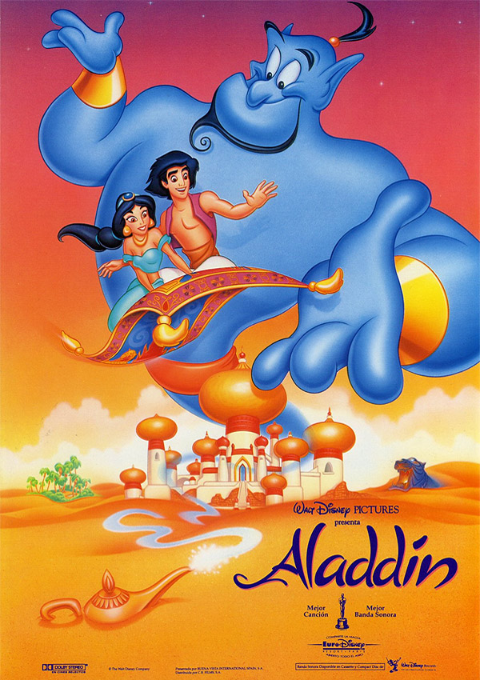

Aladdin (1992)
En el ámbito cinematográfico el estudio logra su mayor esplendor con el estreno de cintas que se convirtieron en éxitos de crítica y comerciales, alcanzando el nivel de culto, entre ellas encontramos: Aladdín.
"Aladdin es un ladronzuelo que se enamora de la hija del Sultán, la princesa Jasmine. Para poder conquistarla aceptará un desafío de Jafar. Aladdín tendrá que entrar en una cueva en mitad del desierto y conseguir una lámpara mágica que contiene al Genio que será el encargado de concederle todos sus deseos."
